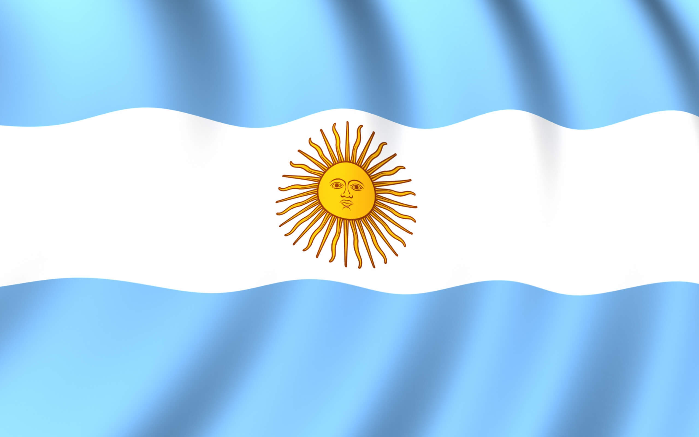

ABOUT ME
>I'm Lujan, I'm from Argentina but I currently live in Puerto Rico. Because of my husband's job we move a lot, but for the next few months we'll be here. I have a little daughter so now I'm just at home taking care of her and studying at night. I like photography, traveling and making videos.
ARGENTINA
Argentina, country of South America, covering most of the southern portion of the continent. The world’s eighth largest country, Argentina occupies an area more extensive than Mexico and the U.S. state of Texas combined. It encompasses immense plains, deserts, tundra, and forests, as well as tall mountains, rivers, and thousands of miles of ocean shoreline. Argentina also claims a portion of Antarctica, as well as several islands in the South Atlantic, including the British-ruled Falkland Islands (Islas Malvinas).